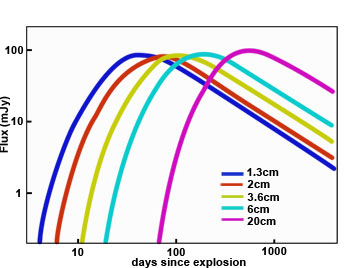

Supernovae which emit radiation at radio wavelengths are known, unsurprisingly, as radio supernovae. Studies of these objects are currently limited by the sensitivity of radio arrays and they are detectable only out to about 20 Mpc for normal supernovae and 100 Mpc for the very brightest objects. During the past 20 years, less than 30 radio supernovae have been detected, though upper limits have been derived for about 100 more. Type Ib and Type Ic supernovae account for 8 of these detections, the rest are associated with Type II supernovae. No Type Ia supernova has been detected in the radio, even though faint radio emission would arise naturally if the currently favoured model for these objects, the single degenerate model, was correct. Again, studies of these objects and the possible detection of this faint emission await more sensitive instrumentation.
The radio emission detected for core-collapse supernovae thus far has been modelled as synchrotron radiation generated by the interaction of the supernova shock wave with high density circumstellar material ionised by the initial UV flash. This circumstellar material was most likely thrown off by the progenitor during the late stages of its “evolution:cosmos/S/stellar+evolution, with models fit to radio observations suggesting that the mass-loss rate may not be constant and the material clumpy.

The light curves for radio supernovae have a shape characterised by a rapid rise in flux followed by a slower power-law decline after maximum is reached at each wavelength. Type Ib and Type Ic supernovae appear to have fairly similar radio properties, arriving at almost the same peak luminosity at 6 cm wavelengths, near or before maximum light at optical wavelengths. The radio light curves of Type II supernovae, however, start much later and are more diverse, peaking at 6cm significantly after optical maximum.
There is some evidence from limited data that radio supernovae may also be useful as distance indicators. In particular, Type Ib and Type Ic supernovae appear to approximate standard candles at radio wavelengths, while the peak luminosity of Type II supernovae at 6cm appears correlated with the time taken to reach that peak from the explosion date.
Supernova studies at radio wavelengths provide one of the best means to study the final evolutionary stages of the progenitor before the explosion. They also allow astronomers to determine how a radio supernova becomes a radio supernova remnant and may be useful as distance indicators. At the moment research into radio supernovae is hampered by small number statistics due to sensitivity limitations of modern radio arrays, but it is hoped with the increased sensitivity of the Square Kilometre Array that the study of radio supernovae will develop rapidly.